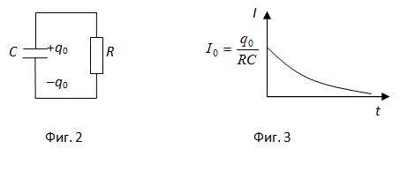

Правила на Кирхоф за разклонените вериги
-
Първо правило на Кирхоф
Първото правило на Кирхоф се отнася за възлите на електричните вериги, т.е. за точките, в които се събират три или повече проводници. То гласи, че алгебричната сума от входящите и изходящите токове във възлите на една електрична верига, е равна на нула (фиг. 1)
-
Първото правило на Кирхов е следствие от закона за запазване на електричния заряд във всяка точка от веригата. Условно входящите токове се приемат за положителни, а изходящите за отрицателни (възможно е и обратното). Така за токовете от фиг. 11.9 правилото се записва като
-
-
Второ правило на Кирхоф
Второто правило на Кирхоф се отнася за затворените контури от разклонена електрична верига. То гласи, че за всеки контур алгебричната сума от произведенията на силата на тока и съпротивленията в него е равна на алгебричната сума от електродвижещите напрежения на източниците, действащи в дадения контур
където n е броят на съпротивленията в дадения контур, а m е броят на източниците на електродвижещо напрежение. При съставяне на уравненията, изразяващи правилата на Кирхоф, трябва да се има предвид следното:
1. За всеки ток в отделните клонове на веригата се избира предполагаема посока. Ако в резултат на изчисленията се окаже, че стойността на съответния ток е отрицателна това означава, че посоката му е противоположна на избраната, без това да се отразява на останалите изчисления.
2. За всеки от контурите се избира посока на движение – по или срещу посоката на движение на часовата стрелка. Ако предполагаемата посока на тока в даден участък съвпада с избраната посока на движение, съответният пад на напрежението се приема с положителен знак, а ако посоките не съвпадат, падът се приема за отрицателен.
3. Ако при движение по контура преместването е от отрицателния към положителния полюс на даден източник (по посока на нарастване на потенциала), електродвижещото му напрежение се приема за положително, в противен случай то е отрицателно. -
Преходни процеси в електрични вериги
Преходните процеси в електричните вериги са свързани с преминаването на електричния ток от един установен режим към друг.
-
1. Разреждане на кондензатор
Ако плочите на кондензатор с капацитет С и заряд съответно +q0 и –q0 се свържат със съпротивление R (фиг. 2), през съпротивлението протича ток, чиято големина се изменя по закона
Токът експоненциално намалява с времето (фиг. 3) до пълното разреждане на кондензатора.
Величинатасе нарича време на релаксация. Това е времето, за което зарядът на кондензатора намалява е-

пъти.
В началния момент t = 0 силата на електричния ток еЗарядът върху плочите на кондензатора се изменя по аналогичен закон
-
2. Зареждане на кондензатор
При затваряне на веригата с ключа К (фиг. 4) в нея протича електричен ток, който зарежда кондензатора. Зарядът върху плочите му нараства от 0 до q0 по закона
където q0 = εC е граничната стойност на заряда на кондензатора при t → ∞.
Увеличаващият се върху плочите на кондензатора електричен заряд препятства протичането на тока и токът намалява по законаГрафично тази зависимост е представена на фиг. 5. Началната стойност на зарядния ток е
-
© ROGACHEV